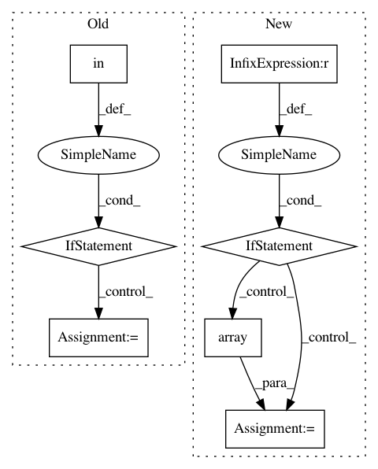

6579941f769413ed00f5330ad45c3c5f44c52927,coremltools/converters/nnssa/coreml/graph_pass/op_fusions.py,,_is_NHWC,#Any#Any#,29
Before Change
// ConcatV2"s last input is axis
return all(graph[inp].attr.get("data_format") == "NHWC" for inp in
node.inputs[:-1])
if node in ELEMENTWISE_OPS:
return all(graph[inp].attr.get("data_format") == "NHWC" for inp in
node.inputs)
return False
def _insert_transpose_to_nchw(graph, src, dst):
After Change
if NHWC_parent:
for inp in node.inputs:
parent_node = graph[inp]
if parent_node.attr.get("data_format", None) == "NHWC_format_inserted":
continue
elif parent_node.value is not None:
// check that the input is a constant and a vector (rank 1)
val = np.array(parent_node.value.val)
if len(val.shape) == 1 and builtins.is_tensor(parent_node.datatype) and len(parent_node.outputs) == 1:
continue
else:
return False
else:
return False
return True
return False
In pattern: SUPERPATTERN
Frequency: 3
Non-data size: 7
Instances
Project Name: apple/coremltools
Commit Name: 6579941f769413ed00f5330ad45c3c5f44c52927
Time: 2019-09-16
Author: awadhwa@apple.com
File Name: coremltools/converters/nnssa/coreml/graph_pass/op_fusions.py
Class Name:
Method Name: _is_NHWC
Project Name: mne-tools/mne-python
Commit Name: 5874885c1736edc321ec202cb6e15d88e4324a5c
Time: 2020-05-19
Author: thomas.hartmann@th-ht.de
File Name: mne/externals/pymatreader/utils.py
Class Name:
Method Name: _handle_ndarray
Project Name: idaholab/raven
Commit Name: 2a3d7175b8da52a64da24e2ed64ca3421ded6bbe
Time: 2017-05-25
Author: paul.talbot@inl.gov
File Name: framework/Optimizers/GradientBasedOptimizer.py
Class Name: GradientBasedOptimizer
Method Name: localFinalizeActualSampling